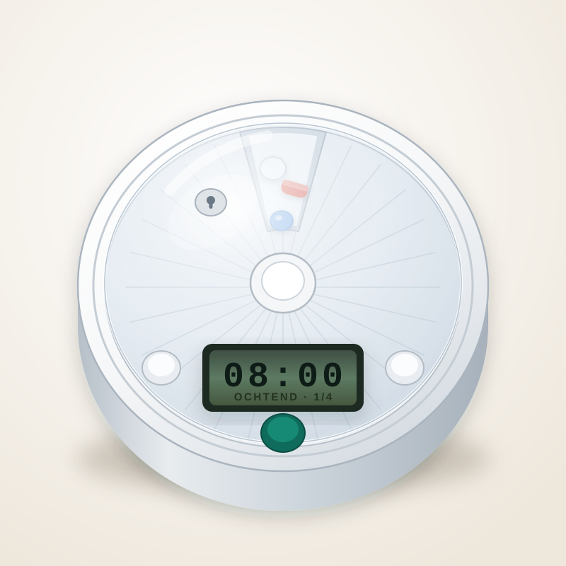

Van de oprichter
Ik heb elf pillendozen met alarm uitgeprobeerd. Dit is wat ik vond.
Het begon met [INVULLEN: jouw eigen aanleiding – bijvoorbeeld een ouder, een buurvrouw, je werk in de zorg. Eén of twee zinnen, eerlijk en concreet. Dit is de enige alinea die de lezer echt onthoudt.]
Wat ik toen ontdekte: er zijn tientallen pillendozen met een alarm te koop, en de meeste zijn ronduit slecht. Niet omdat ze stuk gaan, maar omdat ze bedacht lijken door iemand die zelf nooit een pillendoos heeft hoeven gebruiken.
Dus heb ik er elf besteld. Van de goedkoopste van vier euro tot een model van ruim tweehonderd. Ik heb ze allemaal een week gebruikt. Hieronder staat wat er misging, en waar ik uiteindelijk op uitkwam.
Wat er misgaat bij bijna alle modellen
1. Het alarm is te zacht
Dit was veruit het grootste probleem. Zeven van de elf gaven een piepje van het soort dat je alleen hoort als je er toevallig naast zit. Een pillendoos die afgaat terwijl u in de tuin staat, heeft geen enkele waarde. Ik heb ze gemeten met een geluidsmeter: [INVULLEN: jouw gemeten waarden]. Alles onder de 70 decibel viel af.
2. Het alarm stopt vanzelf
Bijna alle goedkope modellen piepen dertig seconden en houden er dan mee op. Precies het verkeerde gedrag: als u even niet in de buurt bent, mist u het moment en weet niemand dat het gemist is. Wat u wilt is een alarm dat blijft gaan tot de pillen er echt uit zijn.
3. Er moet een app bij
De duurste modellen willen tegenwoordig wifi, een account en een telefoon-app. Op papier klinkt dat slim. In de praktijk is het een extra ding dat stuk kan, een wachtwoord dat kwijtraakt en een wifi-netwerk dat na een storing opnieuw ingesteld moet worden. Voor iemand van in de tachtig is dat geen hulpmiddel maar een obstakel.
Wat mij het meest verbaasde: hoe vaak het verkeerd gaat in het klein. Een deksel dat te stroef opengaat voor stijve vingers. Cijfers van vier millimeter hoog. Een handleiding die alleen via een QR-code te vinden is. Stuk voor stuk details waar een fabrikant makkelijk overheen kijkt – en waar de gebruiker elke dag tegenaan loopt.
Waar ik op uitkwam
Uiteindelijk bleven er twee over. Niet de goedkoopste en niet de duurste, maar de twee waarbij ik na een week nog steeds geen reden had om te klagen.

Het is een ronde doos met achtentwintig vakjes. U vult hem één keer per maand, u stelt met twee knoppen in hoe laat de pillen genomen worden, en daarna doet hij het zelf. Op de ingestelde tijd klinkt er een signaal en gaat er een lampje knipperen. Dat blijft doorgaan tot het vakje leeg is.
Het deksel kan op slot met een sleuteltje. Dan is er per keer precies één vakje bereikbaar. Dat klinkt streng, maar het lost het tweede probleem op waar mensen mee zitten: niet weten of je het al genomen hebt.
Geen app. Geen wifi. Geen account. Twee batterijen, een half jaar lang, en een gedrukte handleiding in grote letters.
Wat ik er niet over ga beweren
Dit is een doos met vakjes en een wekker erin. Meer niet. Hij doseert niets, hij controleert niets en hij weet niet wat u slikt. Wat erin gaat en wanneer, bepaalt u met uw huisarts of apotheek – daar treed ik niet in, en iedereen die u iets anders vertelt over een pillendoos van honderd euro verkoopt u een verhaal.
Wat hij wel doet: het klaarzetten overzichtelijk maken, en op het juiste moment een signaal geven. Voor veel mensen is dat precies genoeg.
Waarom ik er een winkel van gemaakt heb
Omdat ik het zelf niet kon vinden. Je moet je door tientallen bijna-identieke aanbiedingen heen worstelen, met foto's die niets zeggen en omschrijvingen die uit een vertaalmachine komen. Ik wilde één winkel die één ding verkoopt, met een telefoonnummer erbij.
Dus dat is wat dit is. Twee uitvoeringen, een eerlijke prijs, gratis bezorgd, en 30 dagen om te bedenken of het wat is. Bevalt het niet, dan stuurt u hem terug en krijgt u uw geld terug. Zonder dat u hoeft uit te leggen waarom.
En als u er niet uitkomt bij het instellen: bel me gewoon. 085 – 0000 000, maandag tot en met vrijdag, 9.00 tot 17.00 uur.
— [INVULLEN: jouw naam]